Signal Processing & Statistical Learning
Extracting structure from noisy, high-dimensional measurements through probabilistic inference, representation learning, and clustering.
I am a full-time, tenure-track Assistant Professor in the College of Computer Science and Software Engineering at Shenzhen University, with teaching and research responsibilities. As a Ph.D. and master's supervisor, I am authorized to independently supervise Ph.D. students in Computer Science.
I received my Ph.D. in Computer and Information Engineering from The Chinese University of Hong Kong, Shenzhen, in August 2025. My research spans signal processing, optimization, and statistical learning, with a focus on wireless communications and localization. I develop methods that connect data-driven inference with physical models for channel understanding, radio map construction, and positioning. I am a member of IEEE and the China Computer Federation (CCF).

Ph.D., Computer and Information Engineering
Master's degree
Bachelor's degree
Learning and optimizing from signals to understand wireless environments and locate devices.
Extracting structure from noisy, high-dimensional measurements through probabilistic inference, representation learning, and clustering.
Developing efficient optimization methods for wireless communication, channel estimation, resource allocation, and data-driven network design.
Inferring positions and trajectories from wireless signals, and building radio maps with limited or no location labels.
38 publications · 22 journal articles · 16 conference papers
Badges use the CCF 2026 international directory (or the separate CCF 2025 Chinese-journal tiers), CAS 2025 broad-category divisions, and the 2024 Journal Impact Factor. These are venue-level indicators; each badge links to its source. Unlisted or unverified indicators are omitted. All publication thumbnails are AI-generated concept illustrations.
Summary sources and illustration notes38 publications
Introduces a hierarchical team of language-model agents for adaptive network intrusion detection, allocating analysis effort according to traffic difficulty. Environment awareness and continual memory adaptation help the system respond to changing network conditions.
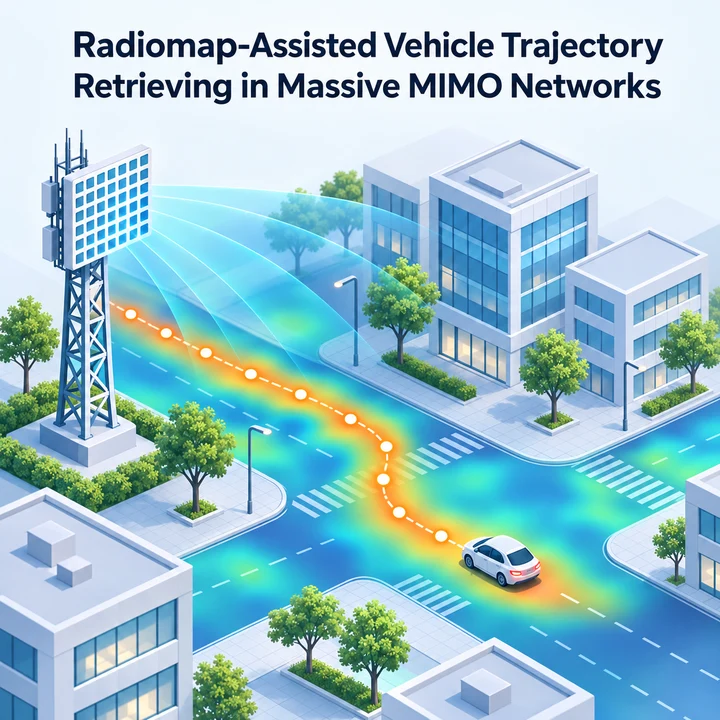
Investigates the recovery of vehicle trajectories using radio maps in massive MIMO networks.
Studies geometry-aware prompt tuning to adapt a wireless foundation model for localization across different scenes.
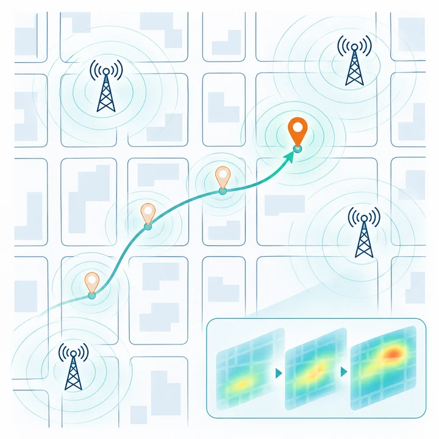
Studies continuous position sensing in massive MIMO networks through adaptive radio map matching.
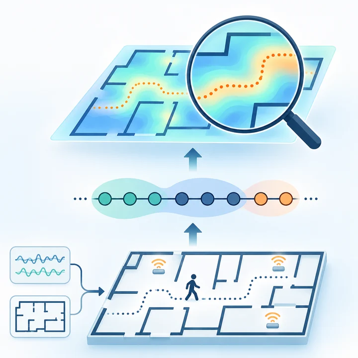
Builds radio maps from unlabeled received-signal-strength sequences using a hidden Markov model and coarse-to-fine location inference. Known indoor layouts and movement continuity provide structure for recovering trajectories without a manual fingerprint survey.
Studies resource allocation for AI-generated-content services in low-altitude networks, with a focus on user quality of experience.
Investigates probabilistic semantic communication for mobile edge computing systems serving low-altitude networks.
Reviews how retrieval-augmented large language models can support decision-making in mobile edge computing. The tutorial organizes design trade-offs and open challenges, and illustrates grounded decision-making through a multiuser computation-offloading case study.
Explores audio large language models as a basis for semantic communication across multiple speech transmission tasks.
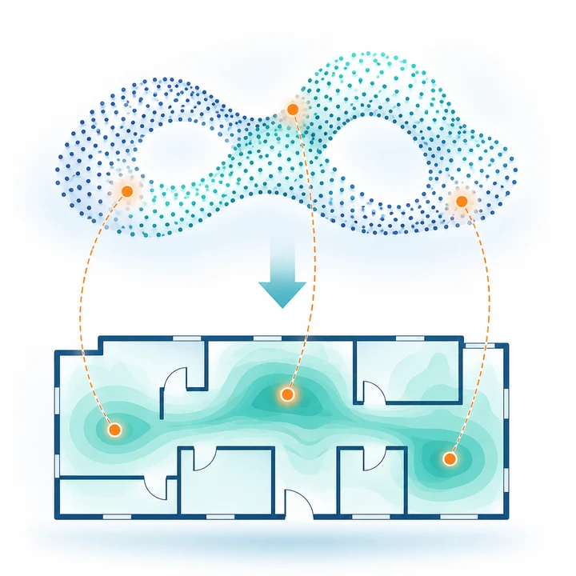
Develops a topology-aware embedding approach for constructing radio maps without labeled location measurements.
Represents wireless measurements as tokens so that a large language model can be adapted for indoor localization. The RATLoc framework combines lightweight adaptation with coordinate prediction to accommodate variable wireless inputs.
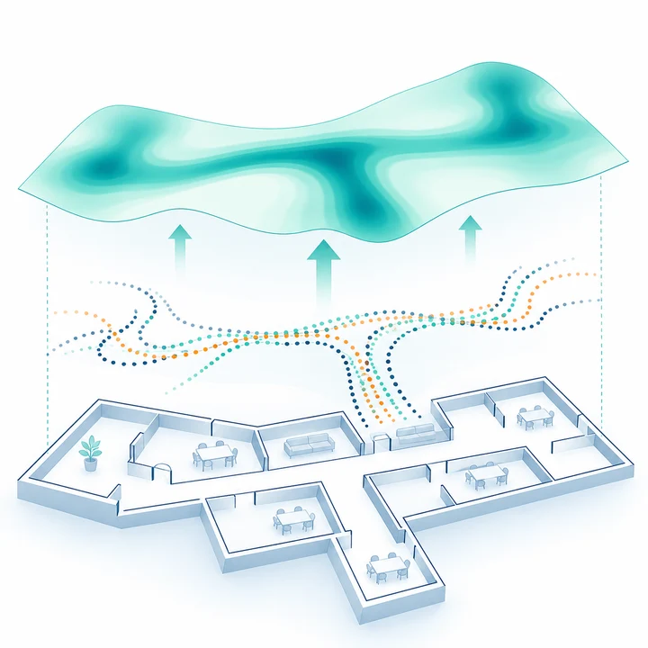
Uses spatial and temporal structure in crowdsourced trajectory data to construct radio maps.
Uses a shared channel map as prior knowledge for both wireless sensing and communication. The framework combines map-assisted target tracking with channel estimation to connect the two tasks through a common environmental representation.
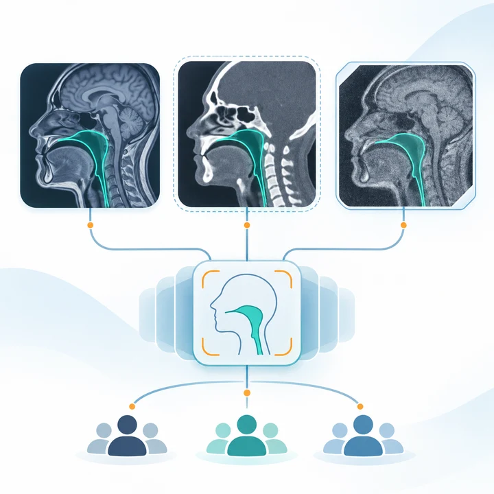
Combines attribute-conditioned feature alignment and history-aware loss weighting to reduce subgroup disparities when adapting medical segmentation foundation models. The design aims to preserve anatomical information while reducing sensitivity to acquisition-related variation.
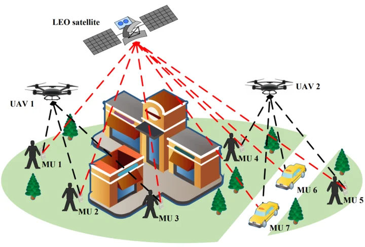
Studies energy-efficient mobile edge computing across a network of satellites, UAVs, and ground users. Joint optimization of user association, UAV trajectories, computation offloading, processing resources, and transmission power coordinates communication and computation.
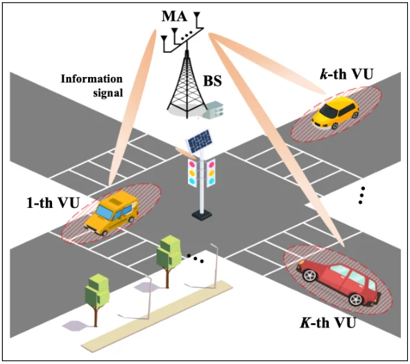
Jointly optimizes movable-antenna positions and transmit beamforming for vehicular networks with uncertain channel information. The robust formulation targets worst-case communication performance while accounting for power and antenna-motion constraints.
Studies an efficient federated large language model framework for personalized recommendation.
Published in Chinese; title translated into English.
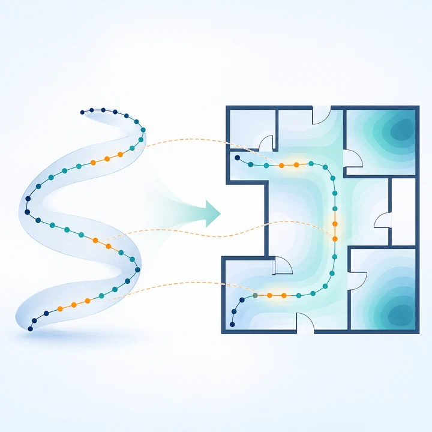
Constructs radio maps from unlabeled channel measurements by learning a low-dimensional representation that preserves their spatial topology. Alignment with geographic structure connects the learned representation to physical locations.
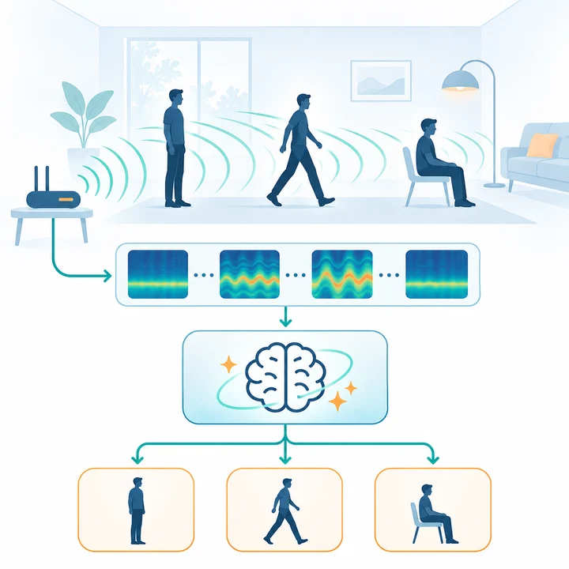
Surveys recent wireless human activity recognition methods and their practical challenges. It also introduces a zero-shot large-language-model framework that interprets wireless measurements using physical activity knowledge and temporal reasoning.
Uses large language models to extract temporal visual semantics and guide subspace clustering of human motion. A feedback loop couples segmentation with representation learning to keep motion groups temporally consistent.
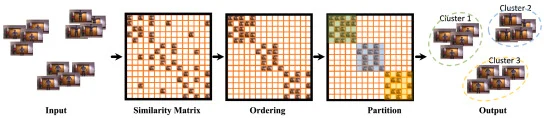
Reorders graph similarity matrices to expose block-diagonal cluster structure, then identifies clusters with a greedy partition algorithm. The method combines density-aware graph traversal with theoretical guarantees under separated-cluster conditions.
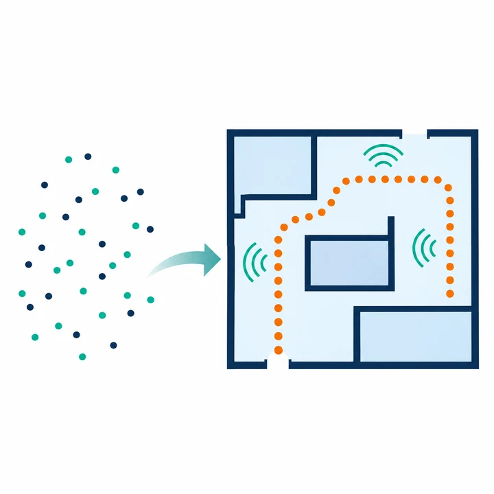
Learns a two-dimensional physical embedding of unlabeled CSI by combining angle-of-arrival, time-of-arrival, and power–angle–delay similarity. The embedding preserves spatial topology to support radio-map construction without location labels.
Infers measurement locations and angular power maps from unlabeled massive-MIMO CSI using a hidden Markov model of propagation and mobility. The work also analyzes localization limits and uses reconstructed maps for channel prediction.
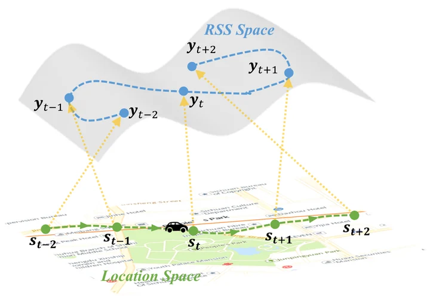
Reconstructs vehicle trajectories from RSS measurements while respecting road-network connectivity and motion constraints. An HMM-based embedding combines signal propagation with temporal dependencies, aided by speed-constrained initialization.
Generates cervical-cancer reports from multi-sequence 3D MRI with a hierarchy of diagnostic and staging experts. Chain-of-thought reasoning and cross-stage consistency checks connect image findings with FIGO staging.
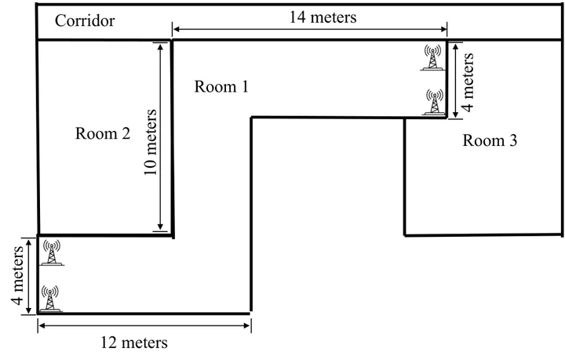
Jointly models channel power, delay, angle, and user motion to recover indoor trajectories without location labels. The HMM framework distinguishes LOS and NLOS propagation when building a radio map.
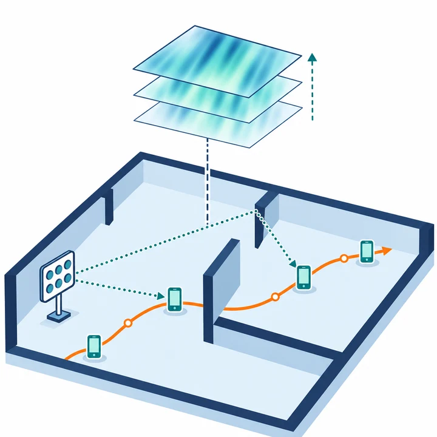
Uses engineered MIMO-OFDM channel features and hidden Markov modeling to recover trajectories in both line-of-sight and non-line-of-sight regions.
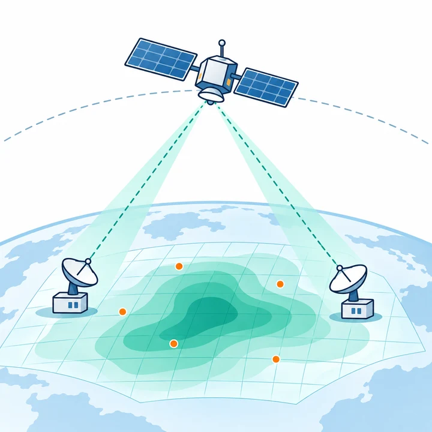
Studies Bayesian transmission and channel knowledge map reconstruction for low-Earth-orbit satellite–terrestrial communication.
Builds angular power maps from massive-MIMO measurements without location labels. A hidden Markov model links temporal CSI variation to the mobile trajectory, providing inferred locations for map construction and channel prediction.
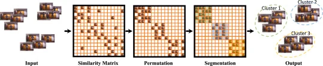
Exposes subspace clusters by permuting the similarity matrix into block-diagonal form and identifying its diagonal blocks. The approach combines density-based traversal with a greedy segmentation rule.
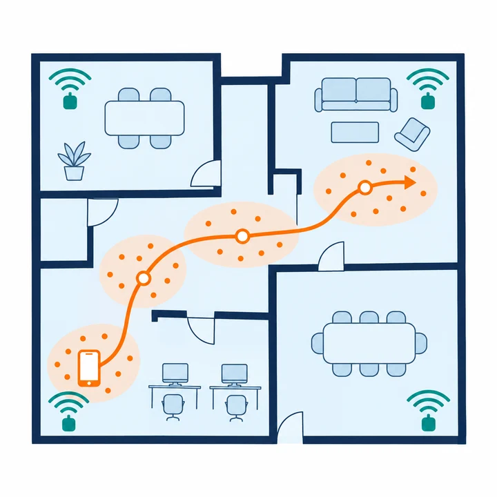
Builds calibration-free indoor radio maps from RSS sequences by tracing movement through known regions. Signal-subspace clustering and regional location tagging recover measurement positions without inertial sensors or manually supplied labels.
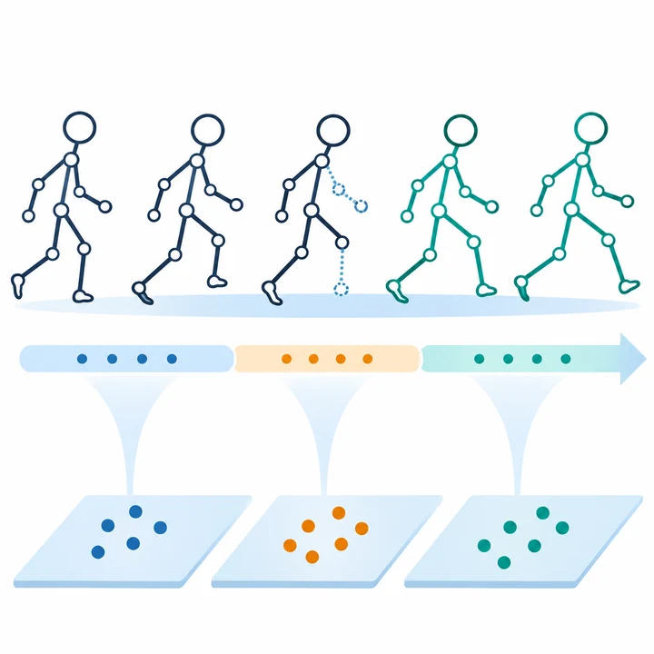
Jointly segments and completes incomplete human-motion sequences with a temporally constrained subspace-variety model. Alternating subspace learning and motion assignment exploit temporal consistency, while missing entries are reconstructed from the learned motion subspaces.
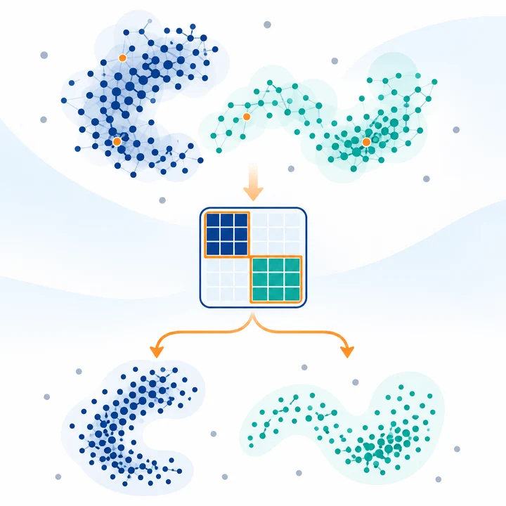
Guides DBSCAN-style traversal with the block-diagonal structure of a learned similarity graph. Ordering followed by split-and-refine partitioning identifies clusters while addressing sensitivity to density parameters and high-dimensional data.
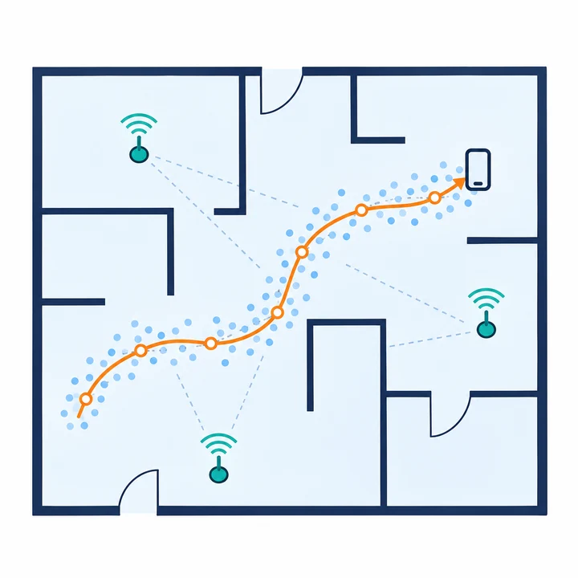
Recovers trajectories of non-cooperative devices through hidden Markov modeling of received-signal-strength measurements.
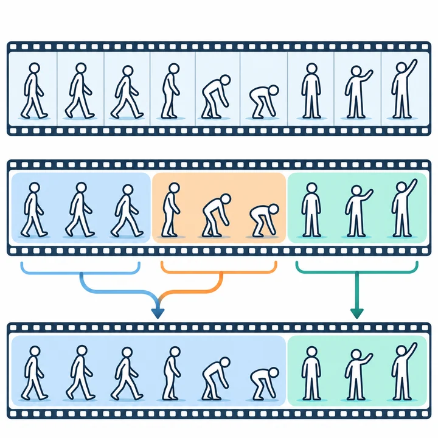
Segments video without a training stage by first splitting it into semantically consistent action units, or actoms. A spatio-temporal merging step reunites units representing the same action, balancing segmentation quality and computational cost.
Constructs region-based indoor radio maps from RSS measurements collected without location labels. Sequential subspace clustering groups measurements, and graph-based matching associates the resulting clusters with physical regions.
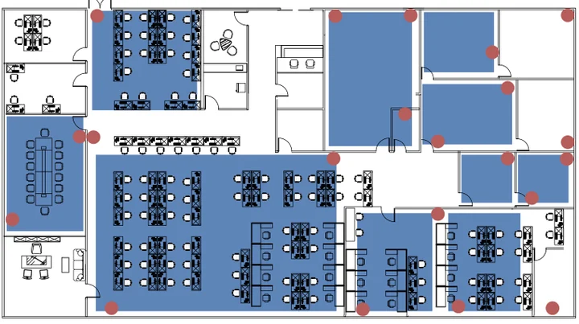
Reduces indoor-localization calibration effort by jointly segmenting and clustering blindly collected RSS sequences. The method exploits collection order and region-specific signal subspaces to recover useful location regions without recording the device route.
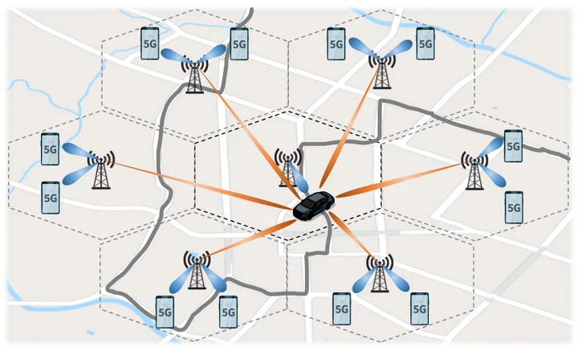
Predicts spectrum efficiency in real 5G networks from drive-test RSRP measurements using model-assisted learning. Joint interference estimation and classification-assisted prediction address information that signal-strength measurements alone do not capture.
No publications match your search. Try another keyword or change the filters.
I welcome motivated students interested in signal processing, optimization, statistical learning, wireless communications, and localization. Master's opportunities are available in Software Engineering, Artificial Intelligence, and Computer Technology.
Prospective Ph.D. students in Computer Science are welcome to contact me to discuss research interests and supervision.
zhengx@szu.edu.cnI welcome first- through third-year undergraduates who are interested in signal processing, statistical learning, and optimization, particularly wireless signal analysis and localization. Strong mathematics and programming skills, along with sustained time for research, are essential. Relevant preparation includes linear algebra, probability and statistics, matrix theory, and MATLAB or Python.
I serve as a reviewer for international journals and conferences.
University Computer Fundamentals · Shenzhen University
College of Computer Science and Software Engineering
Shenzhen University · Shenzhen, Guangdong, China